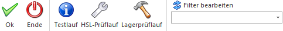

Über den Programmbereich…
1 WinLine FAKT
1 Abschluss
1 Lagerneubewertung
… besteht die Möglichkeit die Werte des Lagers oder der Lagerorte neu zu ermitteln.

Das Fenster ist in die folgenden Register unterteilt, welche in den nachfolgenden Kapiteln detailliert beschrieben werden:
ü Register "Lager"
In dem Register
"Lager" können alle Lagerwerte neu bewertet und eventuelle Rohertragsänderung in
den Kontenstamm übergeben werden.
ü Register "Lagerorte"
In dem
Register "Lagerorte" können die Lagerortbestände bzw. der nicht verfügbare
Lagerortbestand neu ermittelt werden.
Buttons

Ø Ok
Durch Drücken des Buttons "OK" bzw. der Taste F5 wird die Lagerneubewertung gestartet. Im Register "Lager" erfolgt die Durchführung in zwei aufeinanderfolgenden Schritten:
ü Schritt 1 - Initialisierung
Für
die selektierten Artikel und Perioden werden die Lagerwerte initialisiert. Die
Initialisierung bewirkt, dass im Artikelstamm und in den Artikelperioden alle
Mengen/Werte auf null gesetzt werden. Falls eine Periode von >1 eingegeben
wird, so werden die Summen aller Vorperioden des aktuellen Jahres aus den
Artikelperioden in den Artikelstamm summiert.
Falls eine Periode bis <12
eingegeben wird, werden die Summen aller Nachperioden des aktuellen Jahres aus
den Artikelperioden im Artikelstamm summiert.
ü Schritt 2 - Buchung
Anhand des
Artikeljournals werden alle Lagerzugänge nachgebucht und ein neuer
Einstandspreis errechnet. Anschließend werden alle Lagerabgänge nachgebucht und
der Rohertrag im Artikelstamm, in den Artikelperioden und in der
Verkaufsstatistik neu gerechnet.
Handelt es sich bei dem Artikel um eine
Artikel mit Lagerortstruktur, so werden die zugehörigen Lagerortbuchungen
ebenfalls aktualisiert. Die Lagerortsummentabelle wird hierbei allerdings nicht
berücksichtigt und muss über das Register "Lagerorte" separat neu berechnet
werden.
Hinweis 1
Im Zuge der Lagerneubewertung (Register "Lager") werden auch bereits gedruckte (gerechnete) Fakturen dahingehend geändert, dass zur Rohertragsberechnung im Beleg der neu errechneten Werte herangezogen werden (ebenso in der Verkaufsstatistik und dem Backlog).
Artikel, welche als "Basis für die Rohrertragsberechnung" nicht die Einstellung "Einstandspreis" verwenden, sind von der Aktualisierung der Roherträge in bereits gerechnet bzw. gedruckten Belegen ausgenommen.
Hinweis 2
Der (durch die Lagerneubewertung) neu errechnete Einstandspreis (Register "Lager") wird im Artikeljournal direkt verwendet. Zum Andruck des ursprünglichen Wertes steht eine eigene Variable (83/50) zur Verfügung.
Ø Ende
Mit dem "Ende"-Button oder der Taste ESC wird das Fenster geschlossen und keine Lagerneubewertung durchgeführt.
Ø Testlauf (nur im Register "Lager" anwählbar)
Bevor die tatsächliche Lagerneubewertung durchführen wird, besteht mit Hilfe des Buttons "Testlauf" die Möglichkeit einen Testlauf durchzuführen. Dieser Lauf zeigt in Form eines Protokolls an, welche Änderungen bei welchen Artikeln durchgeführt werden würden.
Ø HSL-Prüflauf (nur im Register "Lager" anwählbar)
Wenn dieser Button angewählt wird, so wird das gesamte Artikeljournal nach Buchungszeilen durchsucht, welche nicht vollständig erstellt wurden. Wenn solch eine Konstellation gefunden wird, erfolgt eine Abfrage, ob eine Lagerneubewertung durchgeführt werden soll, damit die Buchungen korrigiert werden.
Wenn diese Frage mit "Nein" beantwortet wird, wird eine Liste mit allen Zeilen ausgegeben, für welche die Lagerstände manuell korrigiert werden können.
Sollte diese Frage mit "Ja" beantwortet werden, so wird eine Liste mit allen Zeilen ausgegeben, die korrigiert werden. Diese Zeilen werden in das Artikeljournal eingefügt und danach für den betroffenen Zeitraum eine Lagerneubewertung gestartet.
Ø Lagerprüflauf (nur im Register "Lager" anwählbar)
Dieser Button kann für die Neuberechnung von kommissionierten Mengen im Falle von "verwaisten" kommissionierten Mengen verwendet werden, z.B. bei kommissionierter Mengen die übriggeblieben sind, obwohl der dazugehörige Auftrag bereits erledigt ist. Bei Anwahl des Buttons "Lagerprüflauf" wird folgendes durchgeführt:
ü Die kommissionierte Menge bei allen vorhandenen "Kommissionierungszeilen" wird auf 0 gesetzt, wenn der dahinterliegende Auftrag bereits erledigt ist oder das Packlistenflag in der Belegzeile irrtümlich überschrieben wurde.
ü Die kommissionierte Menge wird bei allen "Artikeln" auf 0 gesetzt.
ü Die kommissionierte Menge bei allen "Artikeln" wird aus den vorhandenen Kommissionierungszeilen im Artikeljournal nachgebucht.
Ø Filter bearbeiten (nur im Register "Lager" anwählbar)
Mit dem Filter können die Artikel, für welche eine Lagerneubewertung durchgeführt werden soll, nach weiteren Kriterien eingeschränkt werden.